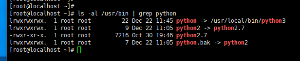

- 查看当前 python 版本
1 | |
- 下载最新的 python 版本
1 | |
- 解压
1 | |
- 进入解压的 python 文件夹
1 | |
- 可能会报错
1 | |
- 报错是由于 linux 没有合适的编译器，安装编译器即可( yum 如果有问题可以参考 yum 更新 )
1 | |
- 然后再执行
1 | |
- 编译(时间较长)
1 | |
- 安装
1 | |
- 这个时候查看 python 版本的还是 2.x 访问 python3 的版本是 3.x; 查看 python 的链接情况
1 | |
- 将原来的 python 的软链接重命名
1 | |
- 将 python 链接至 python3
1 | |
变为

- 查看 python 发现已经是 3.x 的版本
最后会发现 yum 不能使用，由于 yum 引用了 python 需要将 yum 的配置更改
1 | |
将 #!/usr/bin/python 改为 #!/usr/bin/python2.7 就好了
本文参考：
https://blog.csdn.net/liang19890820/article/details/51079633